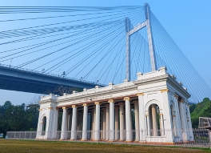
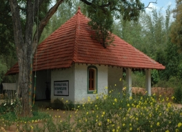
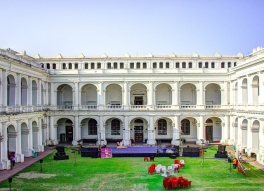

Marble Palace
One of the best preserved and most elegant houses of 19th century Kolkata, this structure is famous for the marble floors and walls that give it its name. The palace houses collections of western sculpture and Victorian furniture, as well as paintings by European and Indian artists.

Netaji Bhawan
Netaji Bhawan or Netaji Bhavan is a building maintained as a memorial and research center to the life of the Indian nationalist "Netaji" Subhas Chandra Bose in Kolkata. The house, built by Bose's father in 1909, is owned and managed by the Netaji Research Bureau and includes a museum, archives and library.

Chintamani Kar Bird Sanctuary
Chintamoni Kar Bird Sanctuary, also known as Kayal-r Bagan, is a bird sanctuary located in West Bengal, India, south of Kolkata. This garden is famous for its wide variety of birds, butterflies, ferns and orchids.

Victoria Memorial
The Victoria Memorial is a large marble building in Central Kolkata, which was built between 1906 and 1921. It is dedicated to the memory of Queen Victoria, now a museum under the auspices of the Ministry of Culture, is the largest monument in the world which is dedicated to a royal.

Datta Ancestral Home - Birthplace of Vivekananda
3 Gour Mohan Mukherjee St. The 18th-century building was in a dilapidated condition, worsening day by day. The Ramkrishna Mission acquired it, along with an adjacent plot, in May 1999. cestral house without changing any of its original architectural features.

Jorasanko Thakurbari Kolkata
The trip to Kolkata would be incomplete without visiting the Jorasanko Thakur Bari or the ancestral house of the Tagores. The most eminent among them was Rabindranath Tagore, a poet, artist, and the first Asian to be honoured with a Nobel Prize.

The National Library of India:
Situated in Alipore, The National Library of India is considered as the largest library in India by volume and the country’s library of public record. One will feel amazed to see the huge collection of around 2.2 million books, 86000 maps, and 3200 manuscripts in this library. The place covers around 30 acre lush green area in Kolkata.

Science City Kolkata:
The Science City of Kolkata is the largest science centre in the Indian subcontinent. It is managed by National Council of Science Museums, Ministry of Culture, Government of India. It is located at the crossing of Eastern Metropolitan Bypass and J. B. S. Haldane Avenue in East Topsia.

Alipore Zoo
The Alipore Zoo is India’s oldest formally stated zoological park and a big tourist attraction in Kolkata. Winter is the best time to visit, when you will be able to see migratory birds. However, there’s plenty to see in other seasons, with birds like Emu, Macaws, Lorikeet, Hornbills, Ostrich, Swinhoe’s.

Indian Museum:
The ninth oldest museum of the world and largest in India, the Indian Museum is located in the city of joy - Kolkata. The foundation stone of the Indian Museum was laid down in the year 1814 and has been a centre of multidisciplinary activities ever since. Popularly known as 'Jadughar'.

St. Paul's Cathedral Kolkata:
Located in the heart of the City of Joy - Kolkata, St Paul's is an Anglican cathedral that operates under CNI – Church of North India. It is a must-visit for those who seek enriching historical and architectural pleasure on their vacation trips.

Prinsep Ghat:
This is the perfect setting for an idyllic riverside outing. Princep Ghat is one of the oldest recreational spots in Kolkata and quite possibly it's most romantic. At any time of the day, this place, which also boasts a Greek and Gothic style beautiful monument, is a sight for sore eyes. Overlooking the river Hoogly.
Dakshineswar Temple:
 Dakshineshwar Kali Temple is a Hindu temple located on the eastern banks of the Hooghly River in a small town in the north of Kolkata named Dakshineshwar. The beauty and charm of Dakshineswar Kali Temple is known to be such that a trip to Kolkata is often said to be incomplete without a visit to this temple.
Profoundly affected by the dream, Rani immediately looked for and purchased a 30,000-acre plot in the village of Dakhineswar. The large temple complex was built between 1847 and 1855. The 20-acre (81,000 m2) plot was bought from an Englishman, Jake Hastie, and was then popularly known as Saheban Bagicha.
Partly old Muslim burial ground shaped like a tortoise, considered befitting for the worship of Shakti according to Tantra traditions, it took eight years and nine hundred thousand rupees to complete the construction. The idol of Goddess Kali was installed on the Snana Yatra day on 31 May 1855 amid festivities
at the temple formerly known as Sri Sri Jagadishwari Kali, with Ramkumar Chhattopadhyay as the head priest.
Dakshineshwar Kali Temple is a Hindu temple located on the eastern banks of the Hooghly River in a small town in the north of Kolkata named Dakshineshwar. The beauty and charm of Dakshineswar Kali Temple is known to be such that a trip to Kolkata is often said to be incomplete without a visit to this temple.
Profoundly affected by the dream, Rani immediately looked for and purchased a 30,000-acre plot in the village of Dakhineswar. The large temple complex was built between 1847 and 1855. The 20-acre (81,000 m2) plot was bought from an Englishman, Jake Hastie, and was then popularly known as Saheban Bagicha.
Partly old Muslim burial ground shaped like a tortoise, considered befitting for the worship of Shakti according to Tantra traditions, it took eight years and nine hundred thousand rupees to complete the construction. The idol of Goddess Kali was installed on the Snana Yatra day on 31 May 1855 amid festivities
at the temple formerly known as Sri Sri Jagadishwari Kali, with Ramkumar Chhattopadhyay as the head priest.
Howrah Bridge:
 The Howrah Bridge is a balanced cantilever bridge over the Hooghly River in West Bengal, India. Commissioned in 1943, the bridge was originally named the New Howrah Bridge, because it replaced a pontoon bridge at the same location linking the two cities of Howrah and Kolkata.Eventually a contract was
signed with Sir Bradford Leslie to construct a pontoon bridge. Different parts of the bridge were constructed in England and shipped to Calcutta, where they were assembled. The assembling period was fraught with problems. The bridge was considerably damaged by the great cyclone on 20 March 1874.
A steamer named Egeria broke from her moorings and collided head-on with the bridge, sinking three pontoons and damaging nearly 200 feet of the bridge.[8] The bridge was complete in 1874,[9] at a total cost of ₹2.2 million,[17] and opened to traffic on 17 October of that year.The bridge was then 1528 ft
long and 62 ft wide, with 7-foot wide pavements on either side.
The Howrah Bridge is a balanced cantilever bridge over the Hooghly River in West Bengal, India. Commissioned in 1943, the bridge was originally named the New Howrah Bridge, because it replaced a pontoon bridge at the same location linking the two cities of Howrah and Kolkata.Eventually a contract was
signed with Sir Bradford Leslie to construct a pontoon bridge. Different parts of the bridge were constructed in England and shipped to Calcutta, where they were assembled. The assembling period was fraught with problems. The bridge was considerably damaged by the great cyclone on 20 March 1874.
A steamer named Egeria broke from her moorings and collided head-on with the bridge, sinking three pontoons and damaging nearly 200 feet of the bridge.[8] The bridge was complete in 1874,[9] at a total cost of ₹2.2 million,[17] and opened to traffic on 17 October of that year.The bridge was then 1528 ft
long and 62 ft wide, with 7-foot wide pavements on either side.
Prinsep Ghat:
 Prinsep Ghat, located on the banks of River Hooghly, is a majestic structure famous for its Greek/ Gothic inlays. The beauty of Princep Ghat draws architecture and history buffs in large numbers, but even locals visit to absorb the regal vibe of the attraction.Prinsep Ghat is one of the oldest recreational spots of Kolkata.[4] People visit it in the evenings on weekends to go boating on the river, stroll along the bank and purchase food from stalls there. A 2-kilometre (1.2 mi) stretch of the beautified riverfront from Prinsep Ghat to Babughat (Baje Kadamtala Ghat) was inaugurated on 24 May 2012. It has illuminated and landscaped gardens and pathways, fountains and renovated ghats. One of the songs in the Bollywood film Parineeta was shot here on the ghats.The meandering Hooghly river which flows perennially through the heart of Kolkata has not only facilitated efficient water transport, but the embankments or Ghats that have been built at strategic locations along the river's flow has provided the people of Kolkata with vantage points to appreciate the beauty of this holy river.
Eco Tourism Park:
 Eco-Tourism Park in Kolkata is an expansive urban park designed to promote eco-tourism in the city. It is the biggest urban park in India and occupies over 475 acres of land. The beauty of the location increases ten folds because of a water body that surrounds the park and forms an island in the middle.The park has been divided into three broad parts; 1) ecological zones like wetlands, grasslands, and urban forest, 2) theme gardens and open spaces, 3) and urban recreational spaces. The Eco Park is further divided into different sub-parts according to the different types of fauna planted. The copies of the Seven Wonders of the World have also been made for people to visit in this park. According to the plan, the park will have different areas like wild flower meadows, a bamboo garden, grasslands, tropical tree garden, bonsai garden*, tea garden, Cactus Walk*, a heliconia garden*, a butterfly garden, a play area and an amphitheatre(*-yet to be added).[4] Further, there is plan to develop an eco-resort in public-private partnership, and will also include an area where handicrafts from different part of the state will be exhibited. The park was inaugurated on 29 December 2012 by Mamata Banerjee.
Indian Museum (Jadu Ghar):
 The idea of setting up this museum was proposed in 1796 by members of Bengal's Asiatic Society, which took shape in 1808 with the occupancy of a government-granted land.Locals refer to this fascinating museum as Jadu Ghar, which means 'house of magic' on translation.It has six sections comprising thirty five galleries of cultural and scientific artifacts namely Indian art, archaeology, anthropology, geology, zoology and economic botany. Many rare and unique specimens, both Indian and trans-Indian, relating to humanities and natural sciences, are preserved and displayed in the galleries of these sections. In particular the art and archaeology sections hold collections of international importance.It is an autonomous organization under Ministry of Culture, Government of India. The present Director of the Indian Museum is Shri Arijit Dutta Choudhury who is also the Director General, NCSM and having the additional charge of Director General of National Library